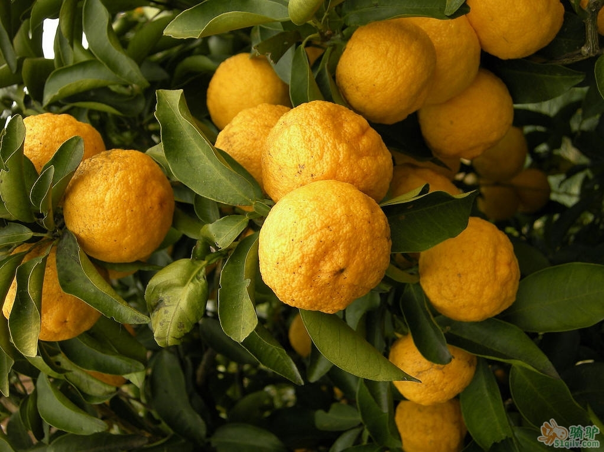

Citrus medica L. · 药食同源之珍品
香橼为热带、亚热带常绿果树，树形优美、枝叶茂盛。果皮金黄芳香，果肉爽脆甘甜， 富含挥发油、黄酮、香豆素等活性成分，具备疏肝理气、宽胸化痰、除湿和中的养生价值。
小乔木或灌木状，树形四季常青，枝叶繁茂观赏性强
株高最高可达5米，幼枝、花苞呈暗紫红色，枝干带有长达4cm尖刺。
单叶无翼，叶片椭圆，叶缘浅钝锯齿，叶柄短小光滑。
总状花序，单花芳香浓郁，每年春季为盛花期。
一年抽发3-4次新梢，春夏秋持续生长，冬季停止萌发。

果实纺锤/近球形，单果最大2kg，果皮厚实粗糙，自带浓郁果香。
内瓤棉软半透明，酸甜适口，每年10-11月完全成熟。
全年可开花，但秋冬花果无法完全成熟，春季坐果品质最佳。
喜温润高原气候，忌严寒霜冻，适合怒江河谷山地种植
冬季最低温不能低于3℃，霜冻会冻伤枝条与果实。
1700米以下河谷坡地，光照充足、通风地块最优。
年降雨量800mm以上，土壤排水性必须优良。
土层深厚、富含有机质砂壤土，透气保肥。
四季生长分明，花果生长周期完整
新梢大量萌发，花朵满树，进入全年授粉关键期。
夏梢持续生长，果实快速膨大，需补水补肥。
果皮转金黄，果香浓郁，集中采摘上市。
停止生长，做好防寒防冻，保障来年挂果。
一身是宝，食用、药用、观赏兼具开发潜力
富含挥发油、黄酮、活性物质，天然健康食材。
理气化痰、健脾和胃，常用于胸闷痰多、积食腹胀。
树形优美，可庭院种植、山地水土保持。
抗氧化、抑菌、调节血脂，现代康养原料。
延伸香橼产业链，打造高原特色农产品加工产业
低温干燥锁鲜，保留原生香气与营养成分。
传统蜜制工艺，酸甜适口休闲零食。
脱苦工艺，清爽天然果蔬饮料。
果皮叶片萃取天然芳香精油。
入药加工，制成调理片剂、水剂。
让怒江香橼走出大山，香飘四海
依托本地香橼资源，完善种植、加工、销售完整产业链，助力乡村振兴，打造怒江特色地理标志农产品名片。